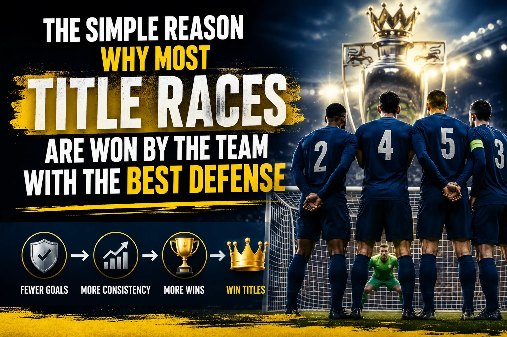

Every season, millions of fans and bettors obsess over strikers. Goalscorers dominate headlines, win Ballon d'Or awards, and move for eye-watering transfer fees. Yet when the dust settles at the end of a gruelling 38-game Premier League season, the trophy almost always ends up in the hands of the team that conceded the fewest goals. It is not sexy. It does not sell shirts. But it is the single most reliable pattern in football — title races are won by the team with the best defense.
In this deep-dive, we break down why defensive solidity is the strongest predictor of league success, back it up with real data from the Premier League, La Liga, and Serie A, and show you how to use this insight in your football betting strategy.
Since the Premier League began in 1992, the team that finished the season with the fewest goals conceded has won the title roughly 70% of the time. That is an extraordinary correlation for any single metric in a sport as chaotic as football. To put it another way, if you simply bet on the team with the tightest defense to win the league, you would have been profitable in the vast majority of seasons.
The reason is mathematical as much as tactical. League football rewards consistency over 38 matches. A team that scores three goals one week and concedes four the next will not win a title. But a team that keeps clean sheets regularly, rarely loses, and grinds out 1-0 and 2-1 wins will accumulate points relentlessly. Defence is the floor — it determines the worst-case scenario — while attack is the ceiling. Title winners need a high floor.
Here is a decade of Premier League champions and how their defensive records compared to the rest of the league:
| Season | Champion | Goals Conceded | Goals Scored | Goal Difference | Fewest GC in League? |
|---|---|---|---|---|---|
| 2015/16 | Leicester City | 36 | 68 | +32 | No (Tottenham had 35) |
| 2016/17 | Chelsea | 33 | 85 | +52 | Yes |
| 2017/18 | Man City | 27 | 106 | +79 | Yes |
| 2018/19 | Man City | 22 | 95 | +72 | Yes |
| 2019/20 | Liverpool | 33 | 85 | +52 | Yes |
| 2020/21 | Man City | 32 | 83 | +51 | Yes |
| 2021/22 | Man City | 26 | 99 | +73 | Yes |
| 2022/23 | Man City | 33 | 94 | +61 | Yes |
| 2023/24 | Man City | 34 | 96 | +62 | Yes |
| 2024/25 | Liverpool | 30 | 81 | +51 | Yes |
Look at that column on the right. In 9 out of 10 seasons, the Premier League champion also had the fewest goals conceded in the entire division. The only exception was Leicester City's miracle season in 2015/16, where Tottenham actually conceded one fewer goal — but Leicester's incredible attacking efficiency and Tottenham's late-season collapse meant the trophy still went to a team that conceded just 36 goals, the fourth-best defensive record in the league.
Pep Guardiola's Manchester City illustrate this perfectly. Across six title-winning seasons, City never conceded more than 34 league goals. In 2018/19, they conceded just 22 — the best defensive record in Premier League history at the time. That was the season they pipped Liverpool by a single point, with 98 points to Liverpool's 97. Both teams were extraordinary, but City's ability to shut out opponents in tight games — including that famous Kompany goal against Leicester and Agüero's last-day winner — was built on a defensive foundation that Liverpool could not quite match over 38 games.
No conversation about defensive football and title wins is complete without Jose Mourinho. The Portuguese manager, who won three Premier League titles with Chelsea and two Serie A titles with Inter Milan, has built his entire career on defensive organisation.
Mourinho's first Chelsea side in 2004/05 conceded just 15 goals in 38 Premier League games — a record that still stands as the lowest in Premier League history. To put that in perspective, that is fewer than 0.4 goals per game. Opposition strikers went weeks without getting a sniff at goal. John Terry and Ricardo Carvalho formed the backbone of that defence, protected by Claude Makélélé's intelligent screening in front of the back four. Chelsea won the title by 12 points, and the defence was the reason why.
When Mourinho returned to Chelsea in 2013, he built a side around the defensive partnership of Gary Cahill and John Terry, with Nemanja Matic screening the back four. Chelsea conceded 32 goals in 2014/15 and won the title by eight points. Mourinho openly admitted he did not care about playing attractive football — he cared about results. And results came from not conceding.
Mourinho's "park the bus" approach was mocked by pundits and rival fans, but it was ruthlessly effective. His Inter Milan side in 2009/10 conceded just 34 goals in 38 Serie A games and won the treble, including a Champions League final victory over Bayern Munich where Inter sat deep and counter-attacked to perfection. Defensive football wins trophies — and Mourinho proved it more emphatically than anyone.
If Mourinho was the godfather of defensive title wins in England, Antonio Conte's 2016/17 Chelsea side was the modern masterpiece. Conte arrived at Stamford Bridge after a disastrous 10th-place finish under Guus Hiddink and immediately implemented a 3-4-3 formation that turned Chelsea into the hardest team in Europe to break down.
The numbers were staggering. After switching to the back three following a 3-0 defeat to Arsenal in September 2016, Chelsea went on a 13-game winning streak — the longest in Premier League history at the time. During that run, Conte's side kept clean sheet after clean sheet. The back three of César Azpilicueta, Gary Cahill, and David Luiz, flanked by wing-backs Marcus Alonso and Victor Moses, created a defensive wall that opposition teams simply could not penetrate.
From the formation switch in October to the end of the season, Chelsea kept 15 clean sheets in their final 25 league matches. They conceded just 18 goals in those 25 games while scoring 45. That defensive solidity underpinned the entire title charge. Diego Costa and Eden Hazard got the goals, but it was the defence that won the league.
Conte himself said after winning the title: "The most important thing is that we were very solid defensively. When you don't concede goals, you have a big chance to win." He was right — and the data backs him up completely.
One of the most interesting developments in modern football is how Pep Guardiola — once associated purely with attacking, possession-based football — has become the most successful defensive manager of the Premier League era. His Manchester City sides have won six league titles in seven seasons, and the common thread across all of them is defensive excellence.
In 2017/18, City won the league with 100 points and conceded just 27 goals. In 2018/19, they conceded 22. In 2021/22, they conceded 26. These are not the numbers of a team that simply outscores opponents — they are the numbers of a team that suffocates them. Guardiola's system uses high pressing and positional play to prevent opponents from even reaching the final third. The ball is the best defender, as Guardiola himself has said many times.
What makes Guardiola's approach particularly fascinating is that it combines defensive solidity with attacking brilliance. City do not park the bus — they dominate possession (often 65-70%) and use the ball to control games. But the defensive structure underneath that possession is immaculate. Full-backs invert into midfield to create numerical superiority, center-backs step up aggressively to win the ball early, and the goalkeeper acts as a sweeper-keeper. Every player defends, and every player attacks.
This is the modern evolution of "defense wins championships." It is not about sitting deep and hoping for the best — it is about controlling games so thoroughly that opponents never get a chance to score. And Guardiola's City have perfected it.
Jurgen Klopp's Liverpool in 2019/20 is a fascinating case study. They were not as defensively dominant as City in terms of raw numbers — they conceded 33 goals compared to City's 22 the year before — but their defensive record was still the best in the league and underpinned one of the most dominant title runs in English football history.
Liverpool won the league by 18 points, finishing on 99 points. Their defensive partnership of Virgil van Dijk and whoever partnered him (Joel Matip, Dejan Lovren, Joe Gomez) was anchored by the best centre-back in the world in Van Dijk, who finished second in the Ballon d'Or voting in 2019. Behind them, Alisson Becker had established himself as the best goalkeeper in the Premier League, with his distribution and shot-stopping giving Liverpool a security that they had lacked for decades.
The key to Liverpool's defensive success was not just individual quality — it was the system. Klopp's gegenpressing meant that as soon as Liverpool lost the ball, they swarmed the opposition in a coordinated press that won the ball back within seconds. This prevented opponents from building attacks and reduced the number of clear chances created against Liverpool. The press was the first line of defence, and it was devastatingly effective.
Liverpool's 2019/20 season also featured an incredible 68-day period from January to March where they won every single league game. During that run, they conceded just 6 goals in 14 matches. The defence was not just good — it was historically good.
Modern football analytics has given us a powerful new tool for evaluating defensive quality: Expected Goals Against (xGA). This metric, tracked by platforms like FBref and StatsBomb, measures the quality of chances a team concedes based on shot location, type, and situation. A team with a low xGA is not just lucky — they are genuinely difficult to create chances against.
The correlation between xGA and league position is remarkably strong. Over the past five Premier League seasons, the team that finished with the lowest xGA has won the title every single time. This is not a coincidence — it reflects the fundamental truth that preventing good chances is more sustainable than relying on your goalkeeper to make spectacular saves.
For bettors, xGA is particularly useful because it strips out variance. A team might concede a lucky goal from a 30-yard screamer, or their goalkeeper might have an extraordinary game and keep a clean sheet despite facing five big chances. xGA cuts through this noise and tells you which teams are genuinely defensively solid. When you see a team consistently posting low xGA numbers, they are the team most likely to be in the title race.
When betting on clean sheets, look at a team's xGA over the last 5-10 games rather than just their raw goals conceded. Teams with consistently low xGA are much more likely to keep clean sheets going forward, even if they conceded a couple of "lucky" goals recently. This gives you an edge over bookmakers who may price clean sheet markets based on recent results rather than underlying data.
The Premier League is not the only league where defence wins titles. In Serie A, Juventus won nine consecutive Scudetti from 2011/12 to 2019/20, and the foundation of every single one of those title wins was defensive excellence.
Juventus' defensive record during that nine-year run was absurd. They conceded 20 goals or fewer in five of those seasons. In 2011/12, they conceded just 20 goals in 38 games. In 2015/16, they conceded 20 again. In 2017/18, they conceded 24. The defensive partnership of Giorgio Chiellini and Leonardo Bonucci, protected by the imperious Andrea Pirlo in midfield (and later by Miralem Pjanic), created a defensive wall that Serie A opponents simply could not break down.
Juventus' defensive approach was a masterclass in Italian football philosophy. Manager Antonio Conte (yes, him again) implemented a rigid 3-5-2 system that prioritised defensive shape above all else. The wing-backs tracked back, the midfielders screened, and Chiellini and Bonucci dominated in the air and on the ground. It was not glamorous, but it was devastatingly effective.
When Massimiliano Allegri took over from Conte, he maintained the defensive foundation while adding more tactical flexibility. Under Allegri, Juventus won four more titles, and their defensive record remained among the best in Europe. The lesson is clear: defensive excellence is not about one manager or one system — it is a principle that transcends tactical trends.
Arsenal's unbeaten Premier League season in 2003/04 is often remembered for the attacking brilliance of Thierry Henry, Robert Pires, and Dennis Bergkamp. And rightly so — Henry scored 30 league goals that season. But the foundation of the Invincibles was a defence that conceded just 26 goals in 38 games.
The back four of Lauren, Sol Campbell, Kolo Touré, and Ashley Cole, protected by the intelligent midfield positioning of Patrick Vieira and Gilberto Silva, was arguably the best defensive unit in Premier League history at that time. Campbell and Touré formed a partnership that combined aerial dominance with pace on the ground, while Lauren and Cole provided width and defensive discipline at full-back.
What made Arsenal's defence particularly remarkable was that they conceded just 26 goals while playing an attacking, high-pressing style. They did not sit deep and defend — they attacked with intensity and defended as a unit. The press started with Henry at the front, and every player bought into the defensive structure. The result was a season where Arsenal lost zero games and conceded fewer than one goal per game on average.
The Invincibles prove that defence and attack are not mutually exclusive. You can play beautiful, attacking football and still be defensively excellent. In fact, the best title-winning sides are those that combine both qualities.
There is a curious paradox in football. Strikers win the Ballon d'Or. Wingers sell the most shirts. Attacking midfielders get the highlight reels. But when you look at the data, the teams that win league titles are almost always the ones with the best defensive records. The media narrative focuses on goals scored, but the mathematical reality is that goals conceded matters more.
Consider this: if a team scores 80 goals and concedes 40, their goal difference is +40. If another team scores 70 goals and concedes 25, their goal difference is +45. The second team, despite scoring 10 fewer goals, would typically finish higher because their defensive record gives them a better goal difference and more points from tight games. In a 38-game season, the ability to win 1-0 and 2-1 is more valuable than the ability to win 5-3.
This is why clean sheets are so important. A clean sheet guarantees at least one point, and usually three. A team that keeps 20 clean sheets in a season has already secured a significant points haul before a single attacking goal is scored. In contrast, a team that scores freely but concedes regularly will drop points in games where they score two or three goals but still lose or draw.
When analysing title races for betting purposes, prioritise defensive metrics over attacking ones. Here is a simple framework:
For more on football betting strategies, check out our comprehensive guide.
Understanding that title races are won by the team with the best defense is not just an academic exercise — it has real practical applications for football bettors. Here is how you can use this knowledge:
At the start of a season, the bookmakers' title odds are heavily influenced by attacking talent. Teams with big-name strikers tend to have shorter odds than teams with strong defences. But the data shows that defensive quality is a better predictor of title success. If you can identify a team with an elite defence before the market catches on, you can get significant value in the outright title market.
Teams that score lots of goals but concede frequently are often overrated in the title market. They might be exciting to watch, but their defensive vulnerability means they are likely to drop points in tight games. If a team is scoring 3 goals per game but conceding 1.5, they are not title contenders — they are a cup team. Bet against them in the outright market.
If you believe a team has the best defence in the league, clean sheet markets offer excellent value. Teams with elite defences keep clean sheets in 45-55% of their games, which means backing them to keep a clean sheet against weaker opposition can be profitable. For more on this, see our guide to clean sheet betting.
Teams with the best defences are even harder to beat at home. When an elite defensive team plays at their home ground, they are extremely difficult to break down. Combining a clean sheet bet with a home win can yield attractive odds, particularly against weaker opposition.
Use FBref to track xGA trends throughout the season. Teams whose xGA is trending downward (conceding fewer and fewer expected goals) are likely improving defensively and could be value in the title market. Conversely, teams whose xGA is rising despite a good defensive record are likely to regress — their clean sheets are not sustainable.
Teams with the best defences rarely lose. If you want a low-risk bet on a title contender, double chance (win or draw) is extremely safe when backing a defensively solid team. The odds are not huge, but the hit rate is very high, making it ideal for accumulators.
To further illustrate the point, let us look at some broader statistical trends:
These numbers are overwhelming. Defence does not just win championships — it is the single strongest predictor of championship success across every major European league. Attack wins games, but defence wins leagues.
Beyond the raw numbers, there is a psychological dimension to defensive football that is often overlooked. A team that knows it is difficult to break down carries a quiet confidence into every match. They know that even if they are not playing well, they are unlikely to lose. This psychological security allows players to take risks in attack, because they know the defence will cover for them.
Conversely, teams that concede regularly develop anxiety. Even if they score first, they know they are vulnerable. This creates a fragility that manifests in late collapses, dropped points from winning positions, and a general sense of insecurity. You can see it in the body language of players — when a leaky defence is under pressure, heads drop, and mistakes multiply.
Mourinho understood this better than anyone. He built Chelsea's defensive identity not just as a tactical framework, but as a psychological weapon. His players knew they were hard to beat, and that knowledge gave them the freedom to play without fear. The same was true of Conte's Chelsea, Guardiola's City, and Klopp's Liverpool. Defensive solidity breeds confidence, and confidence breeds success.
As we look ahead to future seasons, the lesson is clear: if you want to predict which team will win the league, look at the defence first. The team with the best defensive record — the fewest goals conceded, the most clean sheets, the lowest xGA — is statistically the most likely champion.
This does not mean you should ignore attacking quality entirely. A team needs to score goals to win. But when comparing title contenders, defensive metrics should be your primary filter. A team that scores 80 goals and concedes 30 is a far better title bet than a team that scores 90 goals and concedes 45. The former will accumulate points through consistency; the latter will drop points through volatility.
The smartest bettors in the world understand this. They do not get seduced by flashy attacking stats. They look at the underlying defensive numbers, identify the teams with the best defensive structures, and bet accordingly. It is not exciting, but it is profitable. And in the end, that is what matters.
Chelsea in 2004/05 conceded just 15 goals in 38 games under Jose Mourinho, which stood as the Premier League record for many years. Manchester City conceded 22 in 2018/19, which was the best in the Guardiola era. Both represent the gold standard of Premier League defensive football.
Expected Goals Against (xGA) has become one of the most reliable predictors of league success. Over the past five seasons, the team with the lowest xGA in the Premier League has won the title every time. This is because xGA measures the quality of chances conceded rather than just the number of goals, giving a more accurate picture of defensive solidity.
It is possible but rare. Leicester City in 2015/16 is the most famous example — they conceded 36 goals, which was not the best in the league. But even Leicester had the fourth-best defensive record, and their title win is widely regarded as one of the greatest sporting upsets in history. In normal circumstances, the team with the best defence wins.
A combination of goals conceded, clean sheets, and xGA gives the most complete picture. Goals conceded tells you the raw number, clean sheets tells you how often you shut out opponents, and xGA tells you whether the defensive record is sustainable or the result of luck. For detailed xG betting strategies, check our comprehensive guide.
Use our Ticket Builder to create data-driven accumulators backed by defensive stats and xGA analysis.
Build smarter accumulators with our Ticket Builder. Our tool uses defensive metrics, xGA data, and historical trends to help you identify value bets. Whether you are backing a clean sheet or building a title race accumulator, our Ticket Builder gives you the edge.
 Win
Win